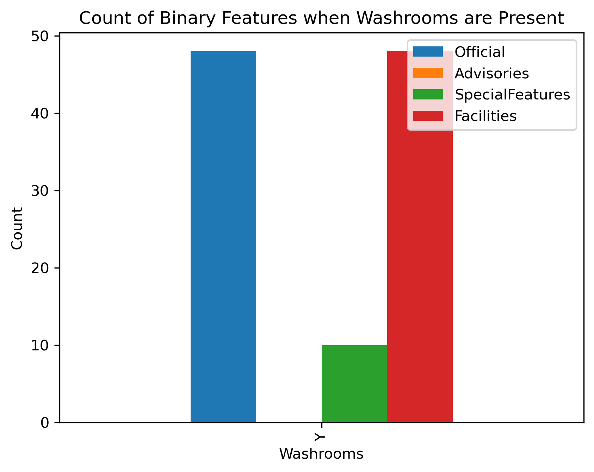
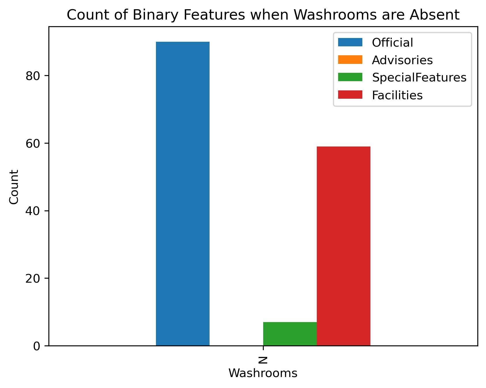
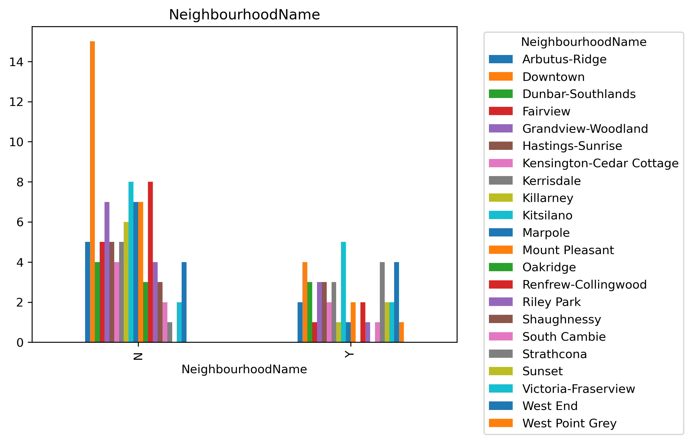
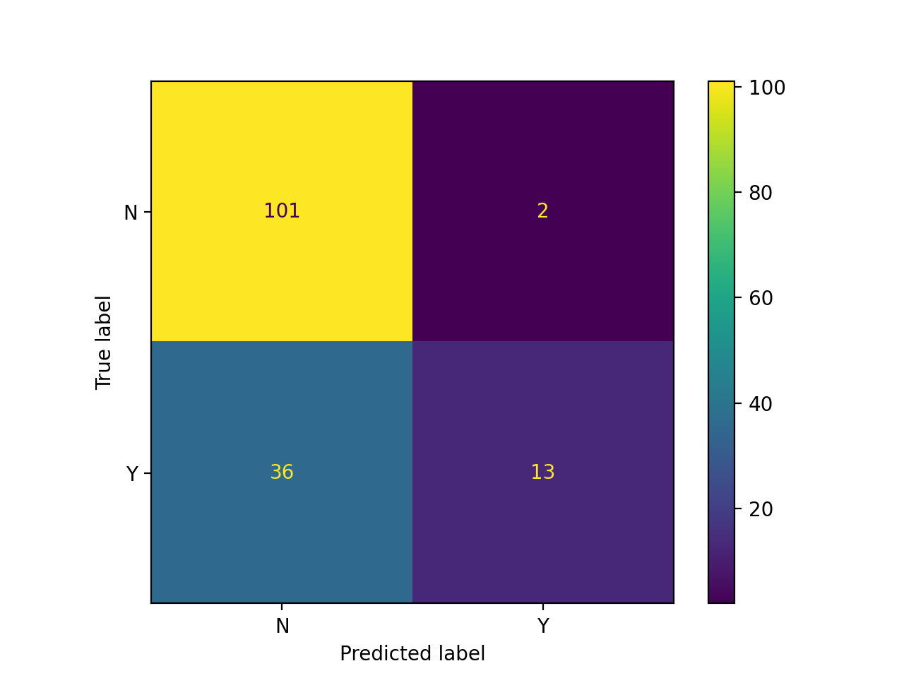

| Unnamed: 0 | dummy | svm_rbf | knn | |
|---|---|---|---|---|
| 0 | fit_time | 0.012 (+/- 0.008) | 0.013 (+/- 0.006) | 0.009 (+/- 0.000) |
| 1 | score_time | 0.006 (+/- 0.002) | 0.006 (+/- 0.001) | 0.033 (+/- 0.061) |
| 2 | test_score | 0.691 (+/- 0.012) | 0.691 (+/- 0.032) | 0.664 (+/- 0.046) |
| 3 | train_score | 0.691 (+/- 0.003) | 0.765 (+/- 0.011) | 0.784 (+/- 0.022) |
Predicting the Presence of Washrooms in Vancouver Parks
Summary
We retrieved the public Park data from the City of Vancouver Open Data Portal. We aim to construct a classification model using the adequate algorithm to help us evaluate the factors that influenced the construction of washroom which is one of the important amenities in public parks. We used two models, KNN and SVM RBVF, to test our data.
The cross-validation result shows that SVM RBF provides a small but consistent improvement over the baseline, while KNN overfits and fails to generalize. The dataset may require richer features or alternative models to achieve stronger predictive performance on washroom availability.
Introduction
The Vancouver parks dataset (Vancouver 2025) offers a comprehensive view of the city’s green spaces, capturing details from park names and neighbourhoods to special features and facilities. The Washrooms column is particularly valuable, as it reveals which parks provide public washrooms and which do not. By linking this information to neighbourhoods and park sizes, the dataset becomes a powerful tool for assessing accessibility and identifying gaps in essential amenities across Vancouver’s park system.
By treating washroom presence as a target variable, we wonder if we can use machine learning algorithm to help us predict where facilities are most needed, identify underserved neighbourhoods, and optimize future installations. Using features such as park size, amenities, and neighbourhood context, ML models can uncover hidden patterns in service distribution and guide equitable infrastructure planning.
Methodology
Data
The data set that was used in this project is from City of Vancouver Open Data Portal (Vancouver 2025). There are over 220 parks and 40 major facilities in the city of Vancouver maintained by the Vancouver Board of Parks and Recreation. In the data set, it has covered 218 park information regarding facilities available to the parks, their locations, and sizes.
Analysis
We compared the performance of a k-nearest neighbors (k-nn) algorithm and a Support Vector Machine with Radial Basis Function (SVM RBF) algorithm to build a binary classification model to predict whether a park has washrooms or not. We included neighbourhood name, park size (hectare), whether the park is official, whether there are any advisories, whether there are additional facilities and whether the park has special features to fit the model. Data was split with 70% of the original dataset in the training set and the remaining 30% in the test set. We conducted 5-fold cross-validation to compare the models with a baseline. All variables preprocessed just before model fitting to ensure reliability. The Python programming language (Van Rossum and Drake 2009) and following scikit-learn models were used to perform this analysis: DummyClassifier (DummyClassifier: Sci-Kit Learn Documentation, n.d.), K-Neighbors Classifier (KNeighborsClassifier: Sci-Kit Learn Documentation, n.d.), SVM RBF Classifier (SVC: Sci-Kit Learn Documentation, n.d.). Inspiration for this report and methodologies came from (Timbers 2024)
Results and Discussion
To look at whether the chosen features might be helpful in predicting the existance of washrooms in Vancouver parks we began with some Exploratory Data Analysis (EDA). We analyze the counts of binary features in parks based on the presence of washrooms to identify patterns in park amenities. We can see from Figure 1 and Figure 2 that parks with washrooms tend to be associated with higher counts of other amenities compared to those without washrooms.


We then used a histogram (Figure 3) to visualize the the number of hectares of a park based on the presence of washrooms. We can see a significant difference in the hectare size of a park when washrooms are present or not. The parks with washrooms tend to be larger in size compared to those without washrooms.

Finally, categorical features are also visualized using bar charts (Figure 4) to show the distribution of different categories based on the presence of washrooms in parks.

3 models were used to predict the presence of washrooms in parks based on the binary, numeric and categorical features. The models used were KNN, SVC with RBF kernal and Dummy classification. The performance of each model was evaluated using cross validation score. The results (Table 1) indicate that the SVC with RBF kernal model had a better performance than the other two models in predicting the presence of washrooms in parks. Finally, we fit the SVC model to our test data to confirm our results, and evaluated the model performance using a confusion matrix (Figure 5).

The analysis reveals that parks equipped with washrooms generally offer a wider range of amenities and larger hectare compared to those without washrooms. This suggests that parks with washrooms may be designed to accommodate more visitors and provide a more comprehensive recreational experience. The presence of washrooms could be an indicator of a park’s overall quality and the level of services it provides to the public.
References
DummyClassifier: Sci-Kit Learn Documentation. n.d. https://scikit-learn.org/stable/modules/generated/sklearn.dummy.DummyClassifier.html.
KNeighborsClassifier: Sci-Kit Learn Documentation. n.d. https://scikit-learn.org/stable/modules/generated/sklearn.neighbors.KNeighborsClassifier.html.
SVC: Sci-Kit Learn Documentation. n.d. https://scikit-learn.org/stable/modules/generated/sklearn.svm.SVC.html.
Timbers, Tiffany. 2024. Breast_cancer_predictor_py [Source Code]. https://github.com/ttimbers/breast_cancer_predictor_py.
Van Rossum, Guido, and Fred L. Drake. 2009. Python 3 Reference Manual. Scotts Valley, CA: CreateSpace.
Vancouver, City of. 2025. “Parks.” City of Vancouver Open Data Portal. https://opendata.vancouver.ca/explore/dataset/parks/information/.